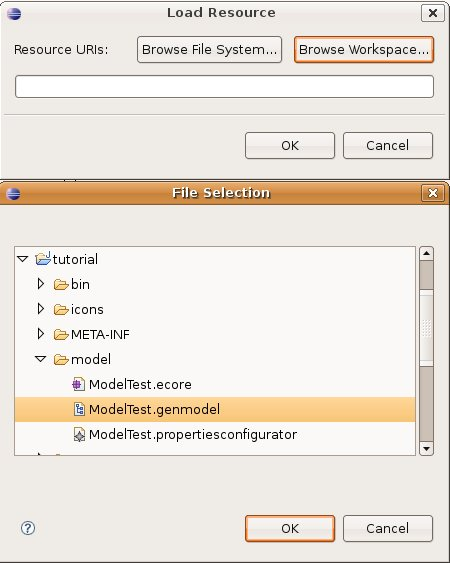

Introduction
The Eclipse workbench provides a properties view which is used to view (and/or edit) properties of a selected item. The workbench provides extensions to define a custom user interface for the properties view. This custom view is a tabbed properties view which allows you to create any user interface for your properties.
In this article, you will learn how to generate a tabbed properties view according to the objects and features of a EMF model. To follow this tutorial, you can use any EMF model.
Required Plug-ins
Since we are going to generate a tabbed properties view from an EMF model, it is required to generate the model implementation plug-in, as well as the edit plug-in and then the editor plug-in. You can find further information about EMF generation the following tutorial.
The + symbol means the plug-ins are generated separately. Thus with a Model and edit + editor combination we will have two plug-ins generated, one featuring the model and the edit and the second one featuring an editor.
In this tutorial we will use the Model and edit + editor combination. When particular takedowns are required for other combination it will be specified.
The Configuration Model
By using the properties configuration editor you will be able to create a model which specifies the way your view will be displayed. When you open the Tabbed Properties Configurator file in the editor, information is sorted as a tree. From the chosen root node you will define : one or several tabs grouped by categories; inside each tab you will apply different kind of sections.
Configuring the Tabbed Properties View
Once the model plug-in are created, we can proceed to configure our tabbed properties view by creating our configurator.
Select "New > Other..." from either the File menu of the workbench or the context menu of the Navigator (Package Explorer) view.
The New Wizard will be displayed. Select "Topcased" folder and choose the "Topcased Configurators".
Click on "Next >". In the next page select the destination project and the name of your configuration file. Be sure the file has *.propertiesconfigurator extension.
Next we will define the root object. Use the combo box with the Model Object label to set the input. All meta-model classes are listed inside. Choose the Tabbed View entry to build a complete model. Leave the default value in the XML encoding field.
Once you finished the wizard, the file you have just created will appear in the eclipse editor. If you expand the tree you will find the input you have selected before. In our case the Tabbed View element.
Each meta-model element can either create children or siblings excepting the input element which has only descendants and the tree leafs which define siblings. You also need to edit some required properties in each element using the properties view.
To begin the configuration, edit the properties of the input element. The GenModel field is a reference to your EMF model. Select the menu "Load Resource" from the context menu to load it. Browse in the workspace the *.genmodel which is going to feature your tabbed properties view.
Once your EMF model loaded, select it using the button "..." of the GenModel property. Fill out the other properties. The project name property, the id property and the name property are necessary to generate a tabbed properties view plug-in. If you decide to name your project as the Model implementation plug-in, the generator will create some new packages inside the plug-in, otherwise it will create a new plug-in project. In this tutorial we will work with separated plug-ins, but you can work with one combine plug-in if you desired.
Next step consist in defining at least one category to group tabs. Right click on the input element and select "New Child > Category". Give a name to your categories using the default properties view. Create some categories to your configurator file. Now you can start adding tabs to your categories. Use the context menu again to create a new Tab inside a selected category. The order your categories are created have a signification. It means that every tab created in the top most category will be displayed at the top most levels followed by the tabs from the second category and so on.
Click on the created tab in the editor and edit its features. Give your tabs the label to be displayed. The afterTab property sort tabs inside a category. First tab might have this value null, the following tabs should specify its preceding tab. Use the button "..." of the afterTab property so that you will notice a list of defined tabs. You can indent your tabs selectiong the indet check-box.
You can create as much tabs as desired. If you want to create a tab in other categories, right click on another one and add tabs there.
Then, you have to specify some custom sections where your properties will be edited/viewed. Tabs will feature sections in order to edit/view properties. Create new sections displaying the context menu from the considered tab. You have three kind of sections as explained before. ATTENTION: at the moment, tabbed properties view generator manage single feature sections and advanced sections. Any multi-section section created will not be generated.
Once again, fill out the section properties. The Feature property will let you specify which Structural Feature from your EMF model is going to be edit/view in this section. As well as tabs, sections have labels to display next to edit fields. Write the label tha suits well with the property you want to edit. In the feature field there is a button "..." to help user to select the model feature to edit. Since sections are not aware of each other, you use the after section property to set their order of appearance. Keep on doing this until you have all the single sections you need.
When we have complex applications with multiple properties, we may not want to provide custom tabs and sections for all the properties available for a selection. Clients can display the "original" table format properties view.
Select a tab and create an Advanced section. It is adviced to create a new tab labeled Advanced. Default properties table is huge and may not fit correctly inside a tab with several sections. This section has the input property where user can specify which EMF model element will feature this view. Use the button "Select..." to display the selection dialog. You can swap element from the left side of the dialog box. Elements in the right side are objects to feature the advanced view.
Do not forget to save your work! It is already done. In the context menu launch the tabbed view generation selection "Generate > Properties View". All required packages and classes will be created in the project you specified. Once it is done, there are few things to do manually to make it work. In the next paragraph you will know how to this.
Manual Takedowns
If sections classes have been generated inside the model plug-in, you will notice a pluginToMerge.xml file and a MANIFESTtoMerge.MF file. Both files contains the necessary information to add. At the moment there is no automatic merger, so we have to do it manually. Copy the three extension points of the pluginToMerge file into the plugin.xml file. Then add the dependencies declared at the MANIFESTtoMerge.MF to the MANIFEST.MF.
I advice you to do your generation this way. It is proper an easier to maintain, especially when you have to regenerate one module.
Updating the workbench part.
A workbench part that provides a tabbed property view needs to implement the : ITabbedPropertySheetPageContributor interface. The plug-in which holds the workbench part must have a dependency entry to org.eclipse.ui.views.properties.tabbed. Implementing this interface imply to implement the method getContributor(), which returns the contributor identifier for your part. Open the plugin.xml file of the generated section plug-in. Go to the "Extension" section and expand the propertyContributor. Copy the value from the contributionId field and paste it as below :
public String getContributorId() {
return the value copied from the plugin.xml;
}
We also need to tell the workbench to use the tabbed property view. Each workbench part can define its own custom property sheet page by providing an adaptable for IPropertySheetPage. The workbench will call your view's getAdapter()method and ask for an IPropertySheetPage. It is at this point that we tell Eclipse to use our tabbed property sheet page.
publicObject getAdapter(Class key) {
...
if (key.equals(IPropertySheetPage.class)) {
return getPropertySheetPage();
}
...
}
The method getPropertySheetPage() implementation should be :
public TabbedPropertySheetPage getPropertySheetPage() {
if (propertySheetPage == null || propertySheetPage.getControl() == null){
propertySheetPage = new <Prefix>PropertySheetPage(this);
}
return propertySheetPage;
}
Of course you have to change the class field propertySheetPage type into TabbedPropertySheetPage.
The class <Prefix>PropertySheetPage has been generated in the advanced package of the sections plug-in. In combinations where the editor's plug-in has been generated separately, just open the MANIFEST.MF and add a dependency to the sections plug-in. If you have chosen the Model, edit, and editor + sections combination, we have to do a supplementary modification. Indeed, if we do not want to find a cyclic dependency, the PropertySheetPage must be moved into the Model, edit, and editor's plug-in and add the following dependencies :
And that is it!! In this article, you have learned how to generate a tabbed properties view according to the objects and features of a EMF model.